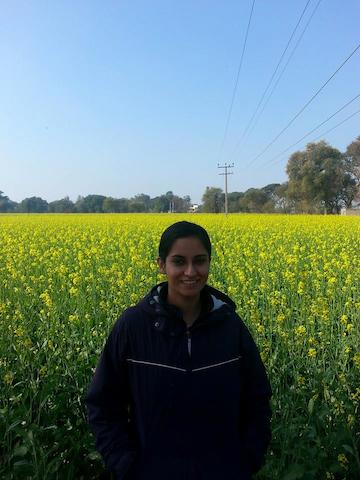
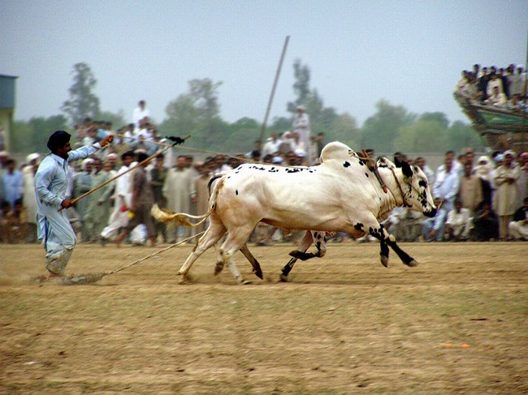
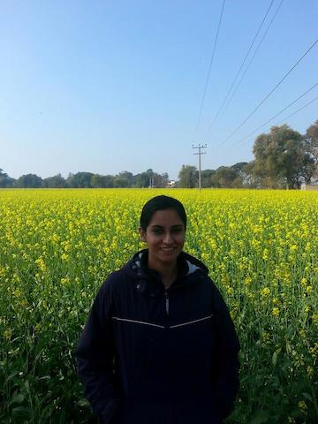
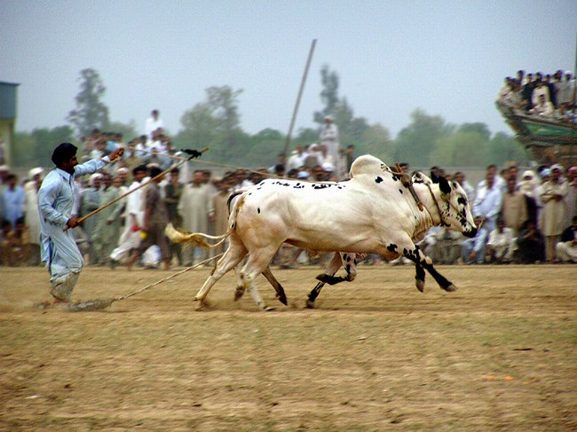

India is a place I really haven't explored. I have been there a few times now, but always with family and always to Punjab. Whenever I go, I end up sitting in some relative's house. I know I have been lucky to see the famous Golden Temple a few times, but I would like to see and do more in India. I hope to one day take a really long tour of the whole country! In terms of what I have experienced in India, I can say that I have eaten a lot of delicious food. My favorite thing to eat the last time I was there (in the city of Ludhiana) was Golgappa. God, I ate so many. It was blissful. The last time I went I was lucky enough to experience some new things - I got to go to Rajasthan and also see people race oxen. Though I did not visit any real historic sites in Rajasthan (again, we were stuck in someone's house), I did get to see traditional Rajasthani dress, which was striking. I also got to see a lot of farmland, including mustard fields which were so pretty as to look photoshopped in pictures. I have enjoyed my past visits to India, but I am definitely looking forward to doing more intensive travel on my own!

 


